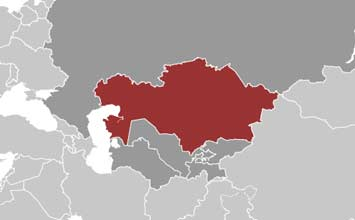

ShareCompartir
ShareCompartir

CDC has long collaborated with Ministries of Health in Central Asia to better recognize and respond to serious public health threats. In 1995, CDC formally established a Central Asia Regional Office in Kazakhstan to serve as the home base for coordinating activities throughout the region. Within the region, CDC aims to strengthen capacity to detect, prevent, and control disease and to respond to public health threats.
Download Overview Fact Sheet

 Staff
Staff
CDC office (physical presence)
3 U.S. Assignees
16 Locally Employed
 Kazakhstan at a Glance
Kazakhstan at a Glance
Population: 16,793,000
Per capita income: $10,320
Life expectancy at birth women/men: 74/63 yrs
Infant mortality rate: 18/1000 live births
Population Reference Bureau World Population Data Sheet, 2012
 Top 10 Causes of Death
Top 10 Causes of Death
Source: GBD Compare 2010
- Ischemic Heart Disease 30 %
- Stroke 16%
- Cancer 15%
- Chronic Obstructive Pulmonary Disease 3%
- Self-Harm 3%
- Cirrhosis 3%
- Road Injuries 3%
- Neonatal Encephalitis 2%
- Lower Respiratory Infections 1%
- Interpersonal Violence 1%
What CDC Is Doing
Impact in Kazakhstan expanded
Global HIV/AIDS collapsed
Global Disease Detection (GDD) collapsed
International Emerging Infections Program (IEIP) collapsed
 CDC IEIP staff work with key stakeholders to improve detection, control, and prevention of emerging infectious diseases. Strategies include strengthening epidemiology, surveillance, laboratory capability, training, and evidence-based public health research and practice. IEIP’s activities have led to improved understanding of the causes and burden of varying diseases such as hepatitis, influenza, and Crimean-Congo hemorrhagic fever (CCHF) in Kazakhstan, and the data have been used to inform public health policy decisions, to evaluate new tools for improving disease diagnosis and treatment, and to strengthen epidemiologic and laboratory capacity.
CDC IEIP staff work with key stakeholders to improve detection, control, and prevention of emerging infectious diseases. Strategies include strengthening epidemiology, surveillance, laboratory capability, training, and evidence-based public health research and practice. IEIP’s activities have led to improved understanding of the causes and burden of varying diseases such as hepatitis, influenza, and Crimean-Congo hemorrhagic fever (CCHF) in Kazakhstan, and the data have been used to inform public health policy decisions, to evaluate new tools for improving disease diagnosis and treatment, and to strengthen epidemiologic and laboratory capacity.Field Epidemiology and Laboratory Training Program (FELTP) collapsed
 The CDC Division of Public Health Systems and Workforce Development has been working in Central Asia since 2003 to build workforce capacity and to support MOHs in training public health officers through a two-year regional Field Epidemiology Training Program (FETP). The FETP program focuses on applied epidemiology, disease surveillance, outbreak response, laboratory methods, and program evaluation. While enrolled, residents continue working in their respective country's health system and are well-positioned to serve as first responders to outbreaks, as well as to serve as leaders and mentors for future in-country specialists in field epidemiology.
The CDC Division of Public Health Systems and Workforce Development has been working in Central Asia since 2003 to build workforce capacity and to support MOHs in training public health officers through a two-year regional Field Epidemiology Training Program (FETP). The FETP program focuses on applied epidemiology, disease surveillance, outbreak response, laboratory methods, and program evaluation. While enrolled, residents continue working in their respective country's health system and are well-positioned to serve as first responders to outbreaks, as well as to serve as leaders and mentors for future in-country specialists in field epidemiology.Global Influenza collapsed
Cooperative Biological Engagement Program(CBEP) collapsed
Global Health Security Agenda collapsed
Resources and Links collapsed
- Page last reviewed: August 13, 2014
- Page last updated: August 13, 2014
- Content source:
Global Health
Notice: Linking to a non-federal site does not constitute an endorsement by HHS, CDC or any of its employees of the sponsors or the information and products presented on the site.